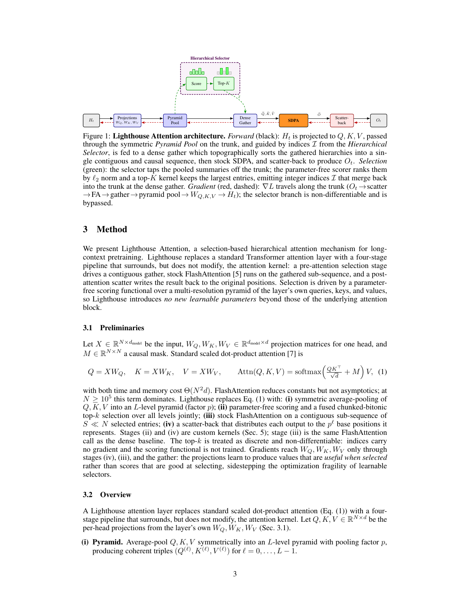
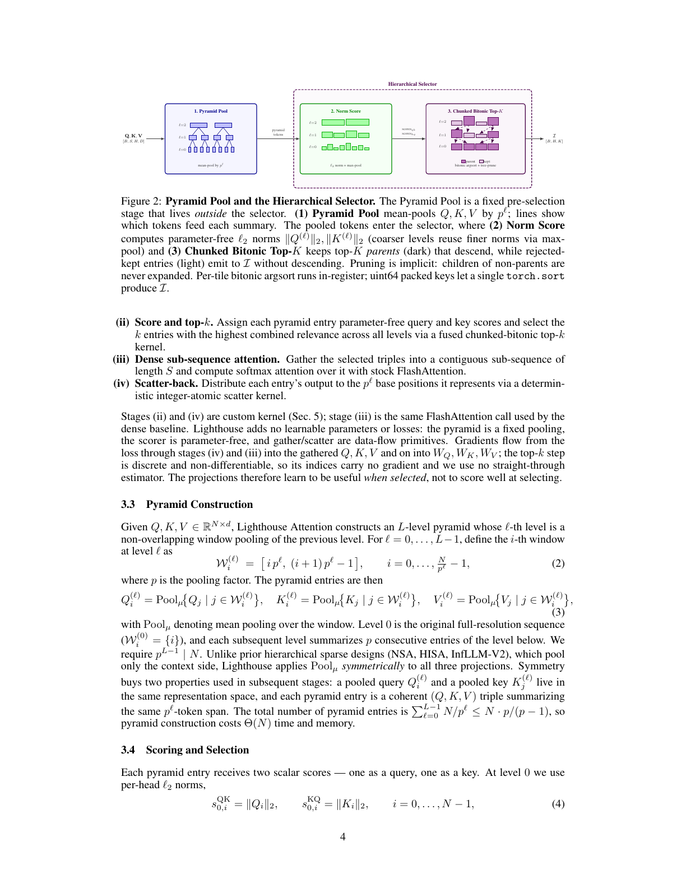
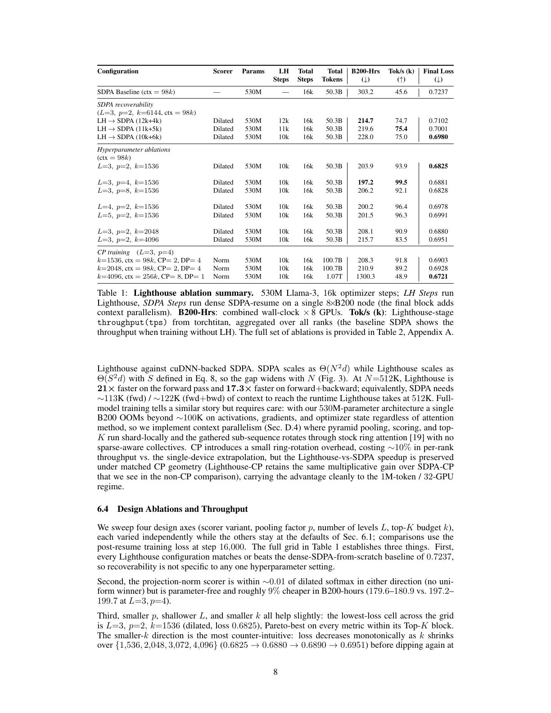
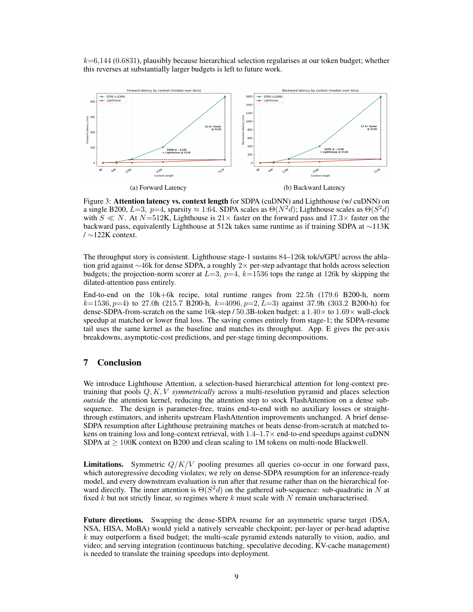
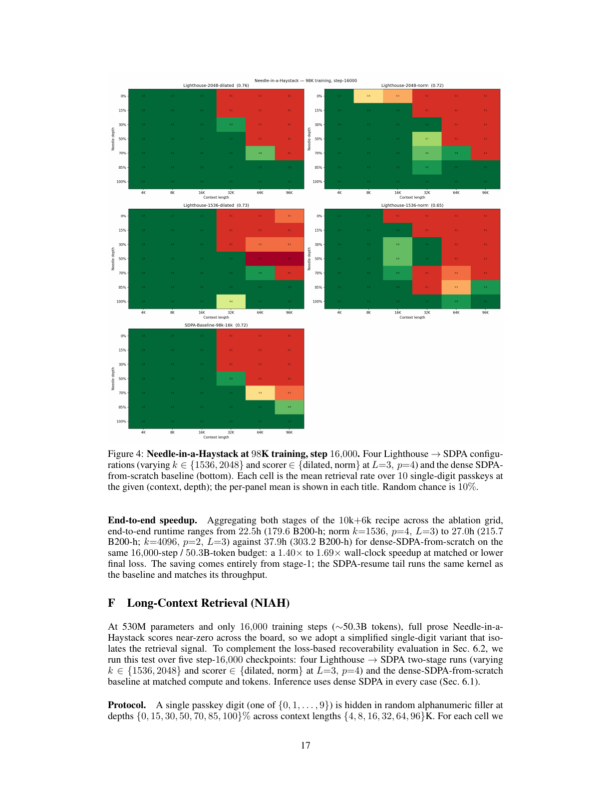

来源地图：我读了什么，怎么核验
本报告不是只复述 tweet。信息按可信度分层：X 原帖用于理解传播主张和社区疑问；arXiv 官方 PDF 是技术主来源；本地命令核验用于判断代码可复现状态。
opencli twitter thread "https://x.com/omarsar0/status/2054224130103554359" --limit 80 -f json --trace retain-on-failure
curl -Ls -o /dev/null -w '%{url_effective}\n%{http_code}\n' "https://t.co/9g5Ldnb1rV"
curl -L --fail "https://arxiv.org/pdf/2605.06554" -o "lighthouse-attention-x/refs/2605.06554.pdf"
pdfinfo "lighthouse-attention-x/refs/2605.06554.pdf"
pdftotext -layout "lighthouse-attention-x/refs/2605.06554.pdf" "lighthouse-attention-x/refs/2605.06554.txt"
git ls-remote "https://github.com/ighoshsubho/lighthouse-attention.git" HEADOmar 的帖子到底在说什么
原帖的核心不是“又一个稀疏注意力推理加速方法”，而是“训练时使用高效注意力近似，最终部署时仍然回到标准 attention”。这使它在工程上比许多 sparse attention 方案更容易被认真对待。
训练时加 wrapper
在普通 SDPA 外面加一个层次选择层。这个层先压缩/选择序列，再把较短的 dense 子序列交给 stock FlashAttention/SDPA。
部署前移除 wrapper
训练末尾短暂切回 full dense SDPA 做 recovery。最终 checkpoint 不需要 Lighthouse 结构，推理服务仍用 vanilla attention。
更快并且 loss 更低
论文报告小规模 LLM 预训练中，在匹配 token budget 下，总训练时间更短，recovery 后最终 loss 低于 dense SDPA baseline。
可见回复里主要有三类问题：第一，训练时学到的注意力拓扑在移除 wrapper 后是否真的保留；第二，wall-clock 加速把 recovery 阶段算进去后还剩多少；第三，Needle-in-a-Haystack 这类长上下文召回是否会掉。论文恰好也把这些问题作为主要实验方向，但证据仍然是初步规模。
论文解决的真实问题
标准 scaled dot-product attention（SDPA）的注意力矩阵大小随序列长度 N 呈平方增长。也就是说，训练一个 100K、512K、1M token context 的 causal transformer 时，注意力部分的时间和显存会非常快地成为瓶颈。FlashAttention 能显著降低常数和内存访问开销，但没有改变 Θ(N²) 这个根本趋势。
已有 efficient attention 大致有几条路：线性注意力/状态空间模型把过去压成固定状态；block sparse 方法保留部分块；token sparse 方法为每个 query 选一部分 key/value；KV-cache eviction 在推理阶段丢掉一部分历史。它们共同的问题是：很多方案要么改变部署时模型结构，要么需要自定义 sparse kernel，要么在训练时引入一个 selector 并要处理 selector 的反向传播、稳定性和质量损失。
所以 Lighthouse 的中心正确性标准不是单步 attention latency，而是：用 Lighthouse 训练大部分步骤后，切回 dense SDPA 做短恢复，最终模型是否仍然像一个正常 dense-attention 模型一样工作。
方法机制：四步理解 Lighthouse Attention
Lighthouse 的设计可以理解为：先把一百万 token 压成一个多尺度金字塔；用很便宜的规则选出重要的 summary/token；把这些条目整理成连续的短序列交给标准 FlashAttention；最后把输出散回原始位置。它没有训练新的 selector，也不让 top-K 走梯度。

对 Q/K/V 同时做多层平均池化
输入 X 先经过普通 attention 投影得到 Q、K、V。Lighthouse 不只压缩 K/V，也压缩 Q；每一层金字塔把相邻 p 个 token 平均成更粗的 summary。第 0 层是原始序列，第 1 层是 p-token summary，第 2 层是 p²-token summary，依此类推。
这一步的关键是“对称”：一个粗粒度 query、key、value 三元组代表同一段 token span。它不是只把上下文存成粗粒度 memory，而是在训练时让 query 也进入多尺度表示。
用无参数分数选 top-K 金字塔条目
每个 pyramid entry 得到两个标量分数：query 方向分数和 key 方向分数。论文默认的便宜版本使用每个 head 的 L2 norm，也就是向量长度；粗层分数从细层 max-pool 得到。然后把所有层的 QK/KQ 分数放在一起做 top-K。
这个 scorer 没有可学习参数，也没有辅助 loss。好处是训练稳定、kernel 简单；坏处是它很弱，不能直接利用 Q-K 交互。论文也测试了更贵的 dilated softmax scorer，结果 loss 差距不稳定且大体在 0.01 内。
把被选中的条目 gather 成连续 dense 子序列
top-K 输出的是 pyramid 坐标。Lighthouse 把对应的 Q/K/V 三元组 gather 出来，并按因果顺序拓扑排序，形成一个长度为 S 的连续子序列。这样后面的 attention 仍然是普通 dense FlashAttention，而不是自定义 sparse attention。
例如论文给出 N=106、L=4、p=4、k=4096 时，S 约为 6.5×104，明显小于 N。
短序列跑标准 attention，再 scatter 回原序列
子序列使用 stock SDPA/FlashAttention 计算注意力输出。之后根据每个 summary 覆盖的 token span，把输出散回原位置。scatter 的窗口会做因果偏移，避免某个位置收到包含未来 token 的 summary。
最后得到的是长度 N 的 dense 输出。这个输出是对 full attention 的压缩近似，但训练图上没有自定义 sparse attention kernel。

复杂度：它为什么能从平方成本里逃出来
直观地说，dense attention 的大头是 N 个 query 与 N 个 key 两两交互。Lighthouse 先把 N 个 token 变成 S 个被选中的多尺度条目，让 attention 只在 S 上做 dense softmax。只要 S 远小于 N，attention 部分就会大幅便宜。
| 阶段 | 实现 | 论文给出的成本直觉 | 关键含义 |
|---|---|---|---|
| Q/K/V 投影 | 普通 GEMM | 线性于 N | 无法省掉，是标准 transformer 的常规成本。 |
| Pyramid pool + scoring | view/mean、norm/max-pool | 线性于 N | cheap enough，不应成为新瓶颈。 |
| Top-K selection | chunked-bitonic kernel | 约 Θ(N log k) | 需要自定义 kernel，但在 attention 外部。 |
| 短序列 attention | stock FlashAttention | Θ(S²d) | 唯一超线性项；只要 S≈k log N，就远小于 N²。 |
| Scatter-back | custom atomic scatter | 线性于 N | 把 summary 输出写回原 token 位置。 |
但这里要小心：论文说总 per-layer compute 在 bounded k 时可近似线性于 N，不等于所有实际训练场景都会线性扩展。因为如果为了质量必须让 k 随 N 增大，或者 if gather/scatter/top-K 的常数很大，实际收益会变弱。这也是我认为后续复现最重要的点。
实验：到底评估了什么
论文评估的核心不是通用能力榜单，而是训练系统问题：在长上下文预训练中，Lighthouse 训练再切回 dense SDPA，是否比全程 dense SDPA 更快且 loss 不差。
530M Llama-3-style decoder
模型规模 530M，30 层，dmodel=1024，8 heads，head dim=128，byte-level tokenizer。层 0、1、28、29 保留 dense SDPA，其余 26 层使用 Lighthouse。
C4, 98,304 context, 16k steps
全局 batch 32，总预算约 50B tokens。Stage 1 用 Lighthouse，Stage 2 切回 dense SDPA，保持总 step/token budget 与 dense baseline 一致。

| 对比对象 | B200-Hrs | Tok/s | Final Loss | 解释 |
|---|---|---|---|---|
| Dense SDPA baseline | 303.2 | 45.6k | 0.7237 | 全程 dense attention，作为同架构、同数据、同 token budget 的参考。 |
| LH → SDPA 10k+6k, k=6144 | 228.0 | 75.0k | 0.6980 | 先 Lighthouse 10k steps，再 dense recovery 6k steps；最终 loss 更低，训练小时更少。 |
| L=3, p=2, k=1536 | 203.9 | 93.9k | 0.6825 | 表中 loss 最好的配置之一；说明更小 k 在这个 token budget 下可能有正则化效果。 |
| Norm scorer, p=4, k=1536 | 179.6 | 126.0k | 0.6946 | 更便宜的无参数 norm scorer 拿到更高 throughput，但 retrieval 上可能弱于 dilated scorer。 |

Needle-in-a-Haystack 评估到底评了什么
论文附录还做了一个简化版 NIAH：在随机 filler 中藏一个 0-9 的单 digit passkey，跨多个 context length 和 depth 测最后位置预测正确 digit 的概率。每个 cell 对 10 个 digit 做平均，随机机会是 10%。注意这不是完整长文理解，也不是真实 agentic memory benchmark；它只隔离了一个很窄的“能否从长上下文召回简单 passkey”的信号。

局限与风险：哪些地方还不能过度相信
实验规模仍小
主实验是 530M 模型、约 50B tokens、C4、98K context。对 frontier 级别模型、万亿级 token budget、多模态长上下文和真实下游任务，还不能直接外推。
代码当前不可公开访问
论文声称 full code available，但当前 GitHub 仓库返回 404。没有代码时，chunked-bitonic top-K、scatter-back、context parallel 的实际工程成本和边界很难独立确认。
loss 不等于长上下文能力
最终 loss 更低是强信号，但它不自动证明复杂长文档推理、跨段一致性、multi-hop recall 或 agent memory 都更好。简化 NIAH 只能覆盖很窄的检索能力。
k 是否必须随 N 增长未知
复杂度论证依赖 bounded k。如果模型质量要求 k 随上下文长度或任务难度增长，S 和 attention 成本会增加，理论和实际收益都会被削弱。
此外，Lighthouse 对 autoregressive decoding 本身并不适配，因为 symmetric Q/K/V pooling 假设所有 query 同时存在于一个 forward pass 中。论文也承认这一点，所以最终仍依赖 dense-SDPA resume 产出 inference-ready model。换句话说，Lighthouse 不是部署时 attention 算法，而是训练时省成本的 scaffold。
我的判断：这是一个“训练基础设施”想法，不是能力魔法
我认为 Omar 的解读方向是对的：真正新鲜的地方不是又设计了一个 top-K sparse attention，而是把 sparse/selection 逻辑从推理架构中解耦出来。它说的是：训练可以暂时“变形”，只要最后有一段足够短的 recovery 能把权重拉回 standard dense attention distribution。
这带来一个很重要的研究问题：模型预训练过程中，到底有哪些计算是“形成表示时必须精确”的，哪些计算只是“帮助优化走到好区域的脚手架”？如果很多长上下文 attention 交互在早期训练中可以用多尺度 summary 近似，而后期再用 dense attention 校准，那么训练成本可能存在比推理成本更大的优化空间。
但工程上我会暂时给它一个“值得跟进，不能直接下注”的评级。原因很直接：一是代码当前不可访问；二是主要实验规模还不够；三是结果集中在 loss 和简化 retrieval，而真实长上下文产品最怕的是罕见但关键的信息被 selection 漏掉。对于训练基础设施，平均 loss 好看还不够，必须看 worst-case recall、跨域 downstream、以及 failure analysis。
| 我会怎么用这个工作 | 当前结论 |
|---|---|
| 作为 long-context pretraining 的工程候选 | 值得重点追踪，特别是如果代码公开并能在 1B-7B 级模型复现 wall-clock + quality 收益。 |
| 作为推理加速方案 | 不是。它的目标恰好是部署前移除，推理仍回到 vanilla dense attention。 |
| 作为能力提升方法 | 证据不足。更像训练效率/正则化方法，不应解读成自动带来新能力。 |
| 作为研究方向信号 | 很有启发：training-only scaffold 可能是高效训练的重要路线，尤其适合不想承担服务端 kernel 复杂度的团队。 |
后续最该看的三个问题
第一，看代码。chunked-bitonic top-K 和 scatter-back 是性能关键；没有代码很难判断论文里的 wall-clock 数字能否在不同框架和硬件栈复现。
第二，看 scale。如果 7B/70B、数千亿 token、1M context 下仍能恢复，并且 recovery tail 不需要变长，那这个方法的意义会大很多。
第三，看能力面。需要从 training loss 扩展到长文档 QA、多跳检索、长程代码仓库理解、agent memory、needle variants、以及对低频信息的 worst-case recall。